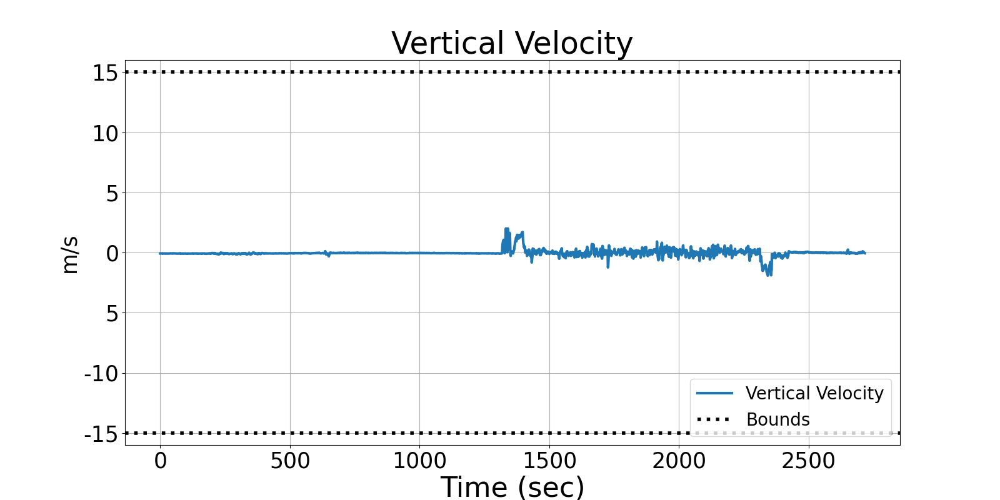
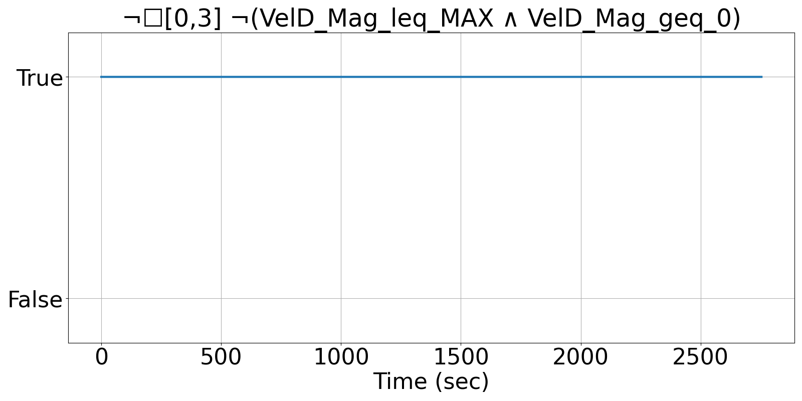
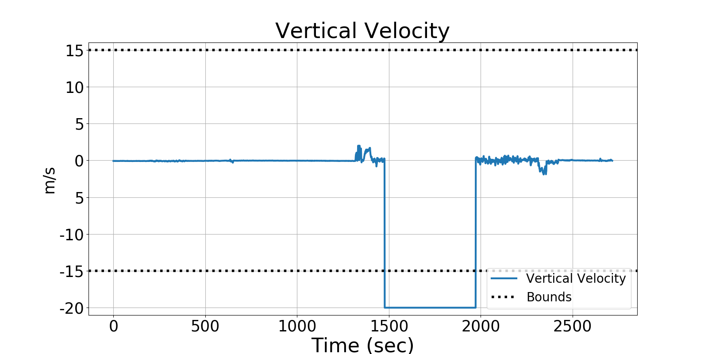
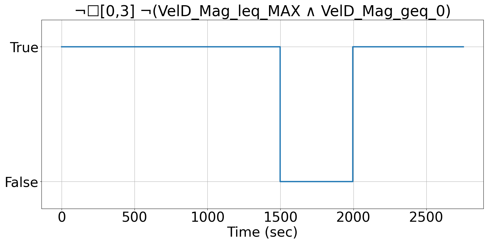

Integrating Runtime Verification into an
Automated UAS Traffic Management System
Matthew Cauwels, Abigail Hammer, Benjamin Hertz, Phillip H. Jones, Kristin Y. Rozier
This webpage contains supplementary specifications for "Integrating Runtime Verification into an
Automated UAS Traffic Management System" by M. Cauwels, A. Hammer, B. Hertz, P. H. Jones, and K. Y. Rozier
OR_UAS_11
Specification Description
The magnitude of the individual velocity components VelD will be bounded between 0 and VELD_OR_MAX at all instances.
Signals Required
VelD
Boolean Conversion of Signals to Atomic Inputs
VelD_Mag = √(VelD²)
VelD_Mag_leq_MAX: VelD_Mag ≤ VELD_OR_MAX
VelD_Mag_geq_0: VelD_Mag ≥ 0MLTL Specificaiton
¬☐[0,3] ¬(VelD_Mag_leq_MAX ∧ VelD_Ma_geq_0)
Fault Explanation
Vertical velocity is exceeding flight bounds
Additional Notes
VELD_OR_MAX is maximum vertical speed (no larger than 15 m/s but likely less)
Figures



